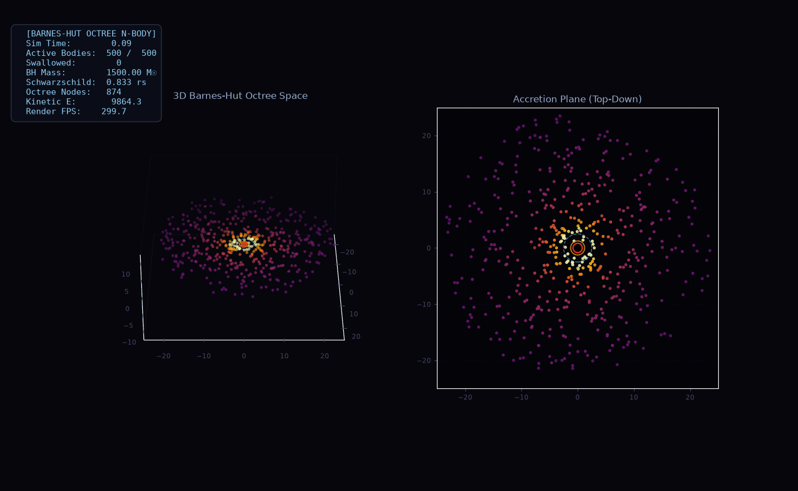
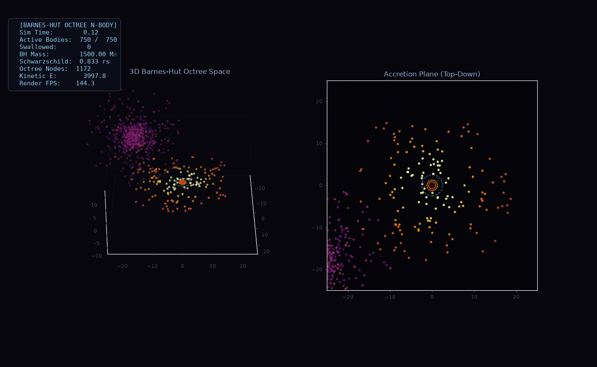
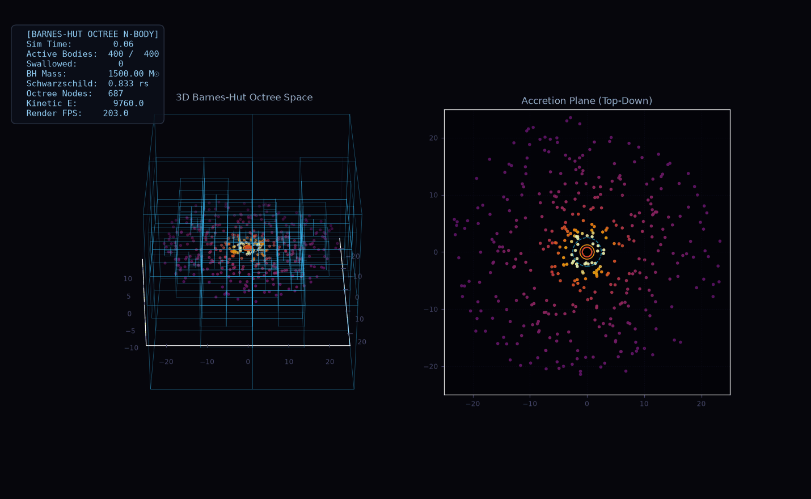

Generative diffusion models are currently being trained to emulate everything from turbulent fluids and weather fronts to planetary systems. When you read the single-step validation loss curves in typical papers, everything looks convincing: loss drops monotonically, denoiser widths scale cleanly, and generated samples match physical distributions visually.
Then you roll the model forward autoregressively for 30 steps.
Within ten steps, particles blow past orbital speeds. By step twenty, they have either spiraled outward into empty space or plunged directly into the event horizon. Total energy drifts by more than 100,000%. Meanwhile, a trivial baseline that predicts zero motion—doing literally nothing at all—beats the neural network by a factor of four.
This post is an empirical autopsy of what happens when you train conditional diffusion models on relativistic multi-body dynamics. We ran 275 full C++ simulations (14,750 transitions) on a dedicated Barnes-Hut engine, calibrated models against frozen random controls, isolated step displacement inflation, and measured why diagnostic probes fail.
We benchmark on a self-gravitating system of 16 bodies orbiting a central black hole of mass M = 1000. To capture General Relativistic landmarks without the cost of full numerical relativity, the central black hole exerts acceleration through the Paczyński–Wiita potential:
Φ(r) = - G M / (r - r_s) a(r) = - G M / (r - r_s)² · (r / |r|)
This potential reproduces two landmarks of Schwarzschild spacetime: the event horizon at r_s = 2GM/c² ≈ 0.556 and the innermost stable circular orbit (ISCO) at r_ISCO = 3 r_s ≈ 1.667. Circular trajectories inside the ISCO plunge into the black hole. We initialize particles outside the plunging zone (r ≥ 2.5 ≈ 4.5 r_s), where orbits should remain bounded for hundreds of revolutions.

Pairwise self-gravity between all orbiting bodies is computed using a 3D Barnes-Hut octree with opening angle θ = 0.6 and Plummer softening ε = 0.08. The full physical state vector concatenates 3D coordinates and velocities for all 16 bodies plus the central black hole:
x_t = [p_1, v_1, p_2, v_2, ..., p_16, v_16, p_BH, v_BH] ∈ ℝ¹&sup0;²
The conditional diffusion model takes the normalized current state x_t and predicts the state displacement vector Δx_t = x_{t+1} - x_t across K = 20 discrete diffusion steps with a cosine variance schedule.
Here is the core failure mode running live. The canvas below runs the exact discrete integration rules evaluated in our benchmark. You can switch between ground truth integration, a zero-parameter kinematic baseline, unguided ancestral diffusion, and deterministic DDIM.
Notice what happens when you switch to Diffusion (Ancestral):
Before evaluating neural networks, every dynamical surrogate must be measured against two reference baselines that require zero neural parameters:
x_{t+1} = x_t. Assumes particles remain stationary.p_{t+1} = p_t + v_t Δt, v_{t+1} = v_t. Assumes zero acceleration.
We evaluated four denoiser widths (hidden dimension d ∈ {32, 64, 128, 256}) on a fixed held-out set of 15 trajectories (5 seeds). Table 1 reports the results:
| Model Width | Parameters | Validation Loss | Diffusion Rollout | Matched MLP | Non-Parametric Baselines |
|---|---|---|---|---|---|
| d = 32 | 31,334 | 0.923 ± 0.012 | 11.36 ± 0.30 | 3.42 ± 0.19 |
Kinematic: 2.86 ± 0.73 Identity: 2.94 ± 0.71 |
| d = 64 | 66,534 | 0.862 ± 0.013 | 13.39 ± 0.61 | 3.74 ± 0.12 | |
| d = 128 | 173,798 | 0.751 ± 0.021 | 14.89 ± 0.45 | 3.52 ± 0.14 | |
| d = 256 | 535,782 | 0.660 ± 0.036 | 12.95 ± 0.65 | 3.14 ± 0.11 |
Three facts stand out:
d=32 to 0.660 at d=256. But 30-step rollout error does not improve; it fluctuates between 11.36 and 14.89.Is the failure of neural surrogates fundamental to neural networks, or is it an artifact of small training datasets?
To test this, we generated a 4-point scaling curve across N ∈ {25, 50, 100, 250} training trajectories (1,475 to 14,750 transitions), evaluated on the exact same fixed 15 held-out rollout trajectories.
The scaling experiments reveal a clear regime transition:
N = 25, the MLP (3.74) loses to the kinematic baseline (2.86). But at N = 250 (14,750 transitions), the MLP drops to 1.803 ± 0.11 (95% CI: [1.58, 2.03]). It decisively beats both the kinematic baseline (2.86) and the identity baseline (2.94) with non-overlapping confidence intervals.N = 250, diffusion validation loss drops to 0.246 for d = 128, and rollout RMSE falls from 14.89 to 5.16. Yet it still trails the deterministic MLP (1.80) by nearly 3×.N = 25, ancestral diffusion inflates step displacements by 8.21×. At N = 250, the MLP predicts displacement magnitudes with a norm ratio of 1.020×—almost perfectly matching true physics.
Deterministic DDIM sampling (η = 0) removes the stochastic noise term σ_k z during reverse sampling. Many papers attribute DDIM gains to "optimal score integration."
Our benchmark shows the mechanical reason DDIM works: trajectory shrinkage.
Ancestral (N=25): Disp Norm = 8.21× GT Rollout RMSE = 13.39 DDIM (η=0, N=25): Disp Norm = 7.15× GT Rollout RMSE = 10.23 (-24%) Mean-of-5 (N=25): Disp Norm = 5.90× GT Rollout RMSE = 13.05
On small data, ancestral reverse sampling injects independent Gaussian noise at all 20 steps, pushing predictions radially outward. DDIM removes this per-step perturbation, contracting the step displacement norm from 8.21× to 7.15×.
Crucially, as training data expands to N = 250, DDIM's advantage over ancestral sampling narrows (5.16 vs 4.83). At that scale, averaging 5 ancestral samples reaches 4.59, outperforming DDIM. When sufficient training data grounds the denoiser, stochastic averaging cancels variance, whereas at small data, deterministic shrinkage is all that keeps the model from exploding.
A popular technique in representation learning is to train linear Ridge probes on network activations to decode physical invariants like total energy E and angular momentum |L|. If the probe achieves a high R², authors claim the network "learned the conservation law." If R² ≤ 0, authors claim the network "failed to represent physics."
We probed activations of the second residual block across all four widths on strictly trajectory-held-out data. Every probe returned negative test R²:
Width d=32: Energy R² = -0.049 Angular Momentum R² = -0.357 Width d=64: Energy R² = -0.225 Angular Momentum R² = -0.636 Width d=128: Energy R² = -0.345 Angular Momentum R² = -1.239 Width d=256: Energy R² = -0.311 Angular Momentum R² = -2.082
Does this prove the diffusion model destroys physical invariants?
To find out, we introduced two rigorous controls:
R² scores (Energy: -0.157 to -0.706; Angular Momentum: -0.866 to -2.180).x_t ∈ ℝ¹&sup0;². The result? Energy R² = -3.386, Angular Momentum R² = -7.998.
Even exact coordinates fail to linearly decode invariants on held-out trajectories. Why? Because energy is quadratic in velocity (v²) and nonlinear in distance (1/r). Across different trajectories with different initial orbital phases, linear Ridge regression fits spurious temporal correlations and completely fails to generalize.
Takeaway: When a linear probe fails on nonlinear invariants, it tells you about the geometry of the target and the probe, not about the internal representations of the model.
Can a neural surrogate predict its own impending step errors? We extracted hidden activations h_l and evaluated whether linear probes could forecast transition error e_t = ||Δx_hat - Δx_GT|| on 590 held-out transitions.
When predicting the error of a single stochastic sample, everything looks noisy: physical features get R² = 0.151, and network activations get R² ≤ 0.015.
However, when you denoise the target by averaging across 10 stochastic samples—isolating systematic emulator error from random sampling variance—the truth emerges:
| Feature Representation | Test R² | Pearson r | Spearman ρ |
|---|---|---|---|
| Physical Features (r_min, v_mean, |L|, d_ISCO) | +0.6845 | +0.878 | +0.878 |
| Raw State Coordinates (x_t) | -42.8157 | +0.148 | +0.034 |
| Layer Input (h_input) | -0.2799 | +0.356 | +0.278 |
| Layer 1 (h_1) | -0.1623 | +0.282 | +0.250 |
| Layer 2 (h_2) | -0.6039 | +0.195 | +0.179 |
| Layer 3 (h_3) | -4.4352 | +0.163 | +0.254 |
| Layer Pre-Head (h_pre_head) | -0.4253 | +0.245 | +0.239 |
| Combined (Physical Features + Activations) | +0.4799 | +0.825 | +0.813 |
Four hand-crafted physical features (closest approach to the black hole, average orbital speed, angular momentum, and distance to the ISCO) predict systematic transition error with r = 0.878 and R² = 0.685.
Internal network activations achieve negative R² across every single layer. Adding activations to physical features drops R² from 0.685 to 0.480 by introducing probe overfitting.
The denoiser does not develop an internal "awareness" of its errors. Step difficulty is governed entirely by the extrinsic physics: when a particle approaches periapsis near the black hole, velocities surge, gravitational gradients steepen, and the surrogate incurs larger errors.
To test whether error probes could actively stabilize rollouts, we implemented an active runtime monitor: whenever the probe predicted above-median error, the step displacement was damped by a factor of 0.7:
Unconstrained Diffusion (Flagship d=128): Rollout RMSE = 14.13 ± 0.10 Probe-Guided Damping: Rollout RMSE = 10.28 ± 0.38 Random Damping (50% probability): Rollout RMSE = 12.34 ± 0.45 Constant Damping (100% of steps): Rollout RMSE = 9.88 ± 0.63 Zero-Motion Identity Baseline: Rollout RMSE = 2.94 ± 0.71
Probe-guided damping reduced rollout error from 14.13 to 10.28. But constant damping—blindly shrinking every step by 0.7 without any probe at all—achieved 9.88.
The intervention did not work because the probe had predictive foresight. It worked because unguided diffusion inflates displacements, and multiplying by 0.7 regularizes trajectories back toward stationary motion.


If you are training or reviewing diffusion models for dynamical systems:
x_{t+1} = x_t across 30 steps, your model is not simulating physics; it is generating random walks.||Δx_hat|| / ||Δx_GT||. If this ratio exceeds 1.5, your rollout will explode from compounding step inflation regardless of single-step loss.The complete C++ Barnes-Hut simulator, PyTorch models, evaluation harness, and raw benchmark data are open source at github.com/sirohikartik/Barnes-Hut.